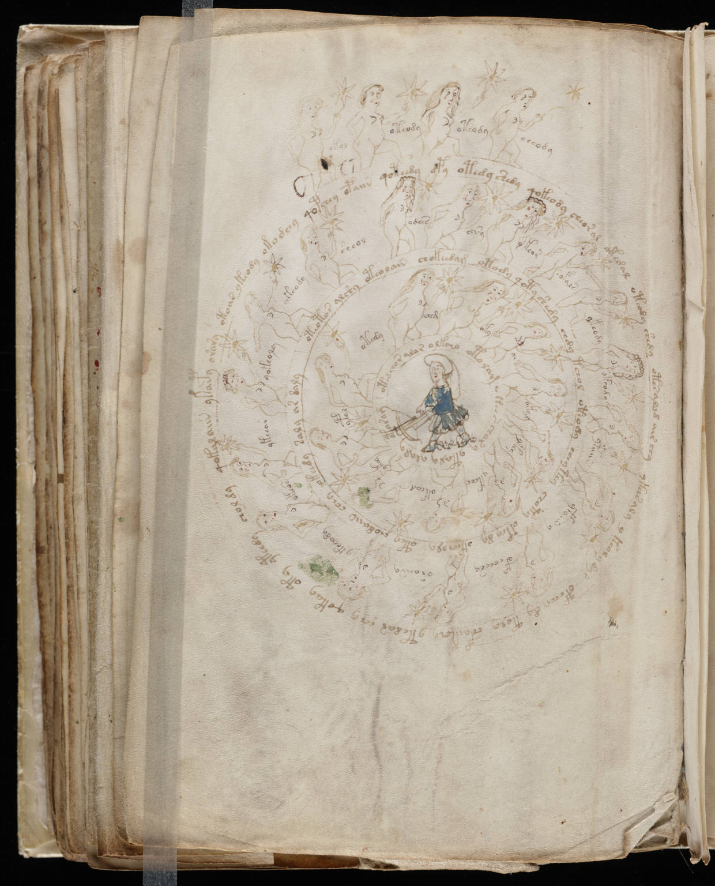

f73v
1okol2oteody3oteody4cheody5otoar ykeody okodeey qopchey opaiin qoteedy dpy otedy csedy qokeody cheoral okedal oteody shedy otesalod air chy ykchs aly ykeol ydys opchey dy toly chfaikch ytedar echy qokeey oty yteedy choldy qokalaiin ykaipy orary6okeody7sheol8odees9ecsy10ykeor11opals12ykeody13okeody14ypaiin15yfaiin y16ofcheesy17oraiiny18ykeeody19okeos20ykeear21qokeoly22oteotor alshy oteolain chokeedam otody qoty shedy chdy tchol oteody cheytey choty okey dy okecholy otey chodaiin chey okchdy saly ar daly23ched24oky25oiair26okal27ykey28ykeeo29okeod30ykey31ypal32otedy33otedchor alar olkcho oto lam okees chory ytaly ylaly otasam
